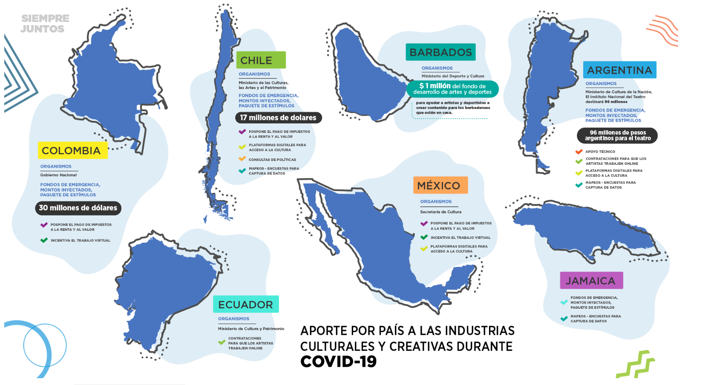

En esta infografía se observan los diferentes aportes que los gobiernos de Latinoamérica y el Caribe han realizado a las industrias culturales y creativas durante la pandemia del COVID-19, ya sea mediante fondos de emergencia, mapeos, plataformas digitales o consultas políticas, entre otros. El BID reconoce el potencial del sector creativo, entendiendo su capacidad de impactar a la sociedad más allá del aspecto económico. Lee más sobre la situación de la denominada “Economía Naranja” durante la pandemia en este blogpost.
Congreso Virtual es una plataforma web que conecta al órgano legislativo con los ciudadanos. La plataforma facilita que la ciudadanía se informe sobre los proyectos de ley y pueda participar del debate público y de la redacción de leyes. En estos días de cuarentena y trabajo a distancia por el COVID-19, la interacción virtual entre ciudadanos y legisladores cobra aún más relevancia. Esta herramienta ofrece que los congresos sigan funcionando durante la crisis sanitaria; manteniendo la actividad legislativa y construyendo un dialogo con los constituyentes.
Encuentra esta y otras soluciones digitales abiertas aquí en Código para el Desarrollo.
Explora el mapa interactivo de ideas e innovaciones en América Latina y el Caribe para afrontar las consecuencias de la crisis producida por el coronavirus. Las ideas provienen de emprendedores de la región y arrojan luz sobre posibles soluciones innovadoras aplicables a la crisis del COVID-19 (contenido disponible en inglés).
Se realizarán trainings en CloudWorking para facilitar la implementación exitosa de programas de trabajo remoto. El acuerdo incluye la donación de licencias de TransparentBusiness a startups y pymes fundadas por mujeres.
Plataforma de coordinación, colaboración y difusión de soluciones digitales de referencia disponibles a nivel mundial para apoyar a las empresas, emprendedores y ciudadanos de América Latina y el Caribe en la lucha contra la pandemia de COVID-19.
La industria cultural y creativa ha sido una de las más duramente afectadas por la pandemia del COVID-19. Conoce cómo a nivel global se está apoyando a los creativos en medio de la crisis. Lee el blogspot aquí.
El arte contribuye a nuestro bienestar. Si bien la pandemia del COVID-19 forzó el cierre de museos, bibliotecas y otras instituciones culturales muchos de ellos han puesto en línea gratuitamente sus contenidos para disfrutar durante el aislamiento.